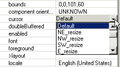

Drop-down property editors are used for properties when there is a restricted set of acceptable values. To use one of these editors, click in the value column of the property, and select the drop-down arrow to view the list of values. When you select a new value in the list, it will be applied to the component you have selected. You do not have to use the Enter key. The cursor property uses an enumerated list as shown below:

Examples of property editors that use enumerated lists are
In addition to the property editor being associated with a type of property descriptor, some enumerated editors are specified on a per-property basis. An example of this is the orientation property on java.awt.Scrollbar. The property is typed to int but is restricted to the static values java.awt.Scrollbar.HORIZONTAL, and java.awt.Scrollbar.VERTICAL, which are 0 and 1 respectively. Rather than having an int property editor that allows any valid integer to be entered, the orientation property editor uses a drop-down list of available values.
Related concepts
Properties view
Property editors
Related tasks
Testing a Java bean